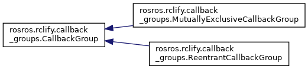
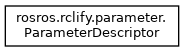
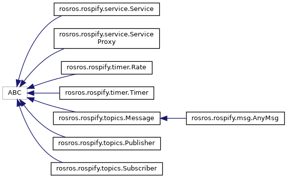

rosros
0.2.3
Simple unified interface to ROS1 / ROS2 Python API
Loading...
Searching...
No Matches
Class Hierarchy
Go to the textual class hierarchy



Generated on Sun Dec 10 2023 19:58:56 for rosros by
1.9.7